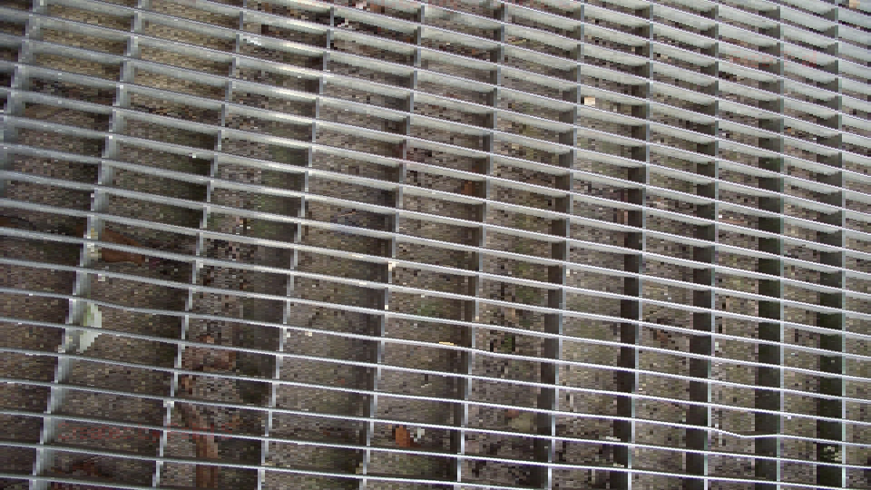

Erzeuge aus den beiden JPG-Bildern, die dir geschickt wurden, Bitmap-Bilder (BMP) im Format 960x540 Pixel, 24Bit
|
Nun lies die Bilder mit bmp_io ein und erkläre die Angaben im Header, die auf der Konsole ausgegeben werden!
-
Wie erklärt sich die Dateigröße für die beiden Dateien?
-
Modifiziere bmp_io dahingehend, dass die RGB Werte der einzelnen Pixel in der BMP-Datei in eine (lesbare) ASCII-Datei geschrieben werden.
Es reichen dabei jeweils eine
Zeile und eine Spalte! Lies die von mir geschickten Testdateien ein
und schätze aus den resultierenden Zahlenfolgen die Periodendauer in Pixeln in horizontaler und vertikaler
Richtung.
(Jeweils eine Periode horizontal und eine vertikal für das Übungsprotokoll abspeichern).
Horizontal und Vertikal


Schätzung der Periodendauer:
Horizontale Werte:
Die Werte wiederholen sich nach 36 Pixeln, beginnend und endend bei 1 1 1.
Horizontale Periodendauer: 36 Pixel
Die Werte wiederholen sich nach 24 Zeilen, beginnend und endend bei 118 118 118.
Vertikale Periodendauer: 24 Pixel
Auch bei der Bildabtastung muss das sogenannte Abtasttheorem eingehalten werden.
Wie lautet es und wie läßt sich der Grenzfall, für den es gerade noch gilt, illustrieren
(Zeichnung !)?
Das Abtasttheorem bei der Bildabtastung besagt, 2 Pixel pro Periode beträgt.
Im Detail:
- Bild enthält räumliche Frequenzen
o Werden von den feinen Details und Strukturen im Bild bestimm
o muss mit mindestens 2 Pixeln pro Periode abgetastet werden
- bedeutet, dass…
o …kleinste Struktur im Bild, die noch korrekt dargestellt werden soll, durch mindestens 2 Pixel erfasst werden muss
▪ …um korrekte Rekonstruktion zu ermöglichen
▪ …um Aliasing zu vermeiden
Erzeuge aus deinen eigenen Farbbildern Graustufen-Bilder.
Dazu muss der Helligkeitswert Y aus den RGB-Werten errechnet werden.
Es gibt dafür verschiedene Ansätze.
Nutze die Formel Y= 0,3 x R + 0,6 x G + 0,1 x B, die die Helligkeitsempfindlichkeit des Auges annähert. Mit diesem Y-Wert wird dann die R, G und B-Information überschrieben.
Speichere die Graustufenbilder ab.
-
Erkläre, wie bei Bild- und Videoaufnahmen Aliasing entstehen kann.
Ähnlich wie bei der 1. Übung am Audiosignal wollen wir auf das Bild ein Down-Sampling anwenden und
sehen, wann dabei Aliasing auftritt.
Beim Audiosignal haben wir jedes zweite Sample verworfen und damit die Abtastfrequenz halbiert.
Beim Bild verringern wir die räumliche
Auflösung, indem wir die Zahl der Bildzeilen bzw. Bildspalten verringern.
Dabei wollen wir das Bild allerdings nicht verkleinern - was normalerweise die Folge wäre - sondern einfach
die ungeradzahligen Spalten durch den Inhalt der geradzahligen Spalten ersetzen,
d.h. Spalte 1 wird durch Spalte 0 ersetzt, Spalte 3 durch Spalte 2 etc. und analog für die Zeilen.
Wenn das Ursprungsbild nun sehr feine Strukturen aufweist, wie in machen Testdateien, können Aliasing-Verzerrungen sichtbar werden.
Achte darauf, dass stets Rot, Grün und
Blau getrennt manipuliert werden müssen.
- Bei Bild- und Videoaufnahmen entsteht Aliasing:
o wenn feine Strukturen/ Details im Bild aufgrund einer zu niedrigen Abtastrate nicht korrekt dargestellt werden können
o Effekt zeigt sich oft durch optische Artefakte wie:
▪ Moiré-Muster
▪ Treppeneffekte
o Treten auf, wenn Abtastrate nicht ausreicht, um Frequenz der Details wiederzugeben
- Aliasing sichtbar machen
o Bild durch Down-Sampling der räumlichen Auflösung manipulieren
▪ ohne das Bild tatsächlich zu verkleinern
- verschiedene Arten Down- Sampling durchzuführen:
o 1. Räumliche Auflösung verringern:
▪ normalerweise bedeutet Verringern der Auflösung das Bild zu verkleinern
▪ wollen stattdessen bestimmte Bildinformationen verwerfen und Bild in ursprünglicher Größe beibehalten
o 2. Zeilen und Spalten zusammenführen:
▪ Inhalte jeder ungeraden Spalte und Zeile mit denen ihrer jeweiligen benachbarten geraden Spalte und Zeile ersetzen:
▪ Spalte 1 wird durch Inhalt von Spalte 0 ersetzt, Spalte 3 durch Spalte 2 usw.
▪ Ebenso werden Zeile 1, Zeile 3 usw. durch Inhalte der vorangehenden Zeilen ersetzt
▪ Prozess entspricht einer ‚Halbierung der räumlichen Frequenz‘ des Bildes
▪ ähnlich wie das Halbieren der Abtastfrequenz beim Audiosignal
o 3. *Verarbeitung für Farbkanäle (Rot, Grün, Blau)*:
▪ Bilder oft in RGB-Kanälen gespeichert
▪ Deswegen muss Down-Sampling für jeden Farbkanal einzeln durchgeführt werden
▪ Bei jedem Kanal wird das Verfahren angewendet, sodass die ungeraden Zeilen und Spalten durch die Inhalte der benachbarten Zeilen und Spalten ersetzt werden
- Aliasing und sichtbare Verzerrungen
o Wenn Ursprungsbild feine Strukturen enthält
▪ z. B. Linienmuster, Details mit hoher räumlicher Frequenz
o führt Verfahren zum Aliasing
o Erscheinungen könnten wie folgt aussehen:
▪ Moiré-Muster
▪ Wiederholte feine Muster im Bild
▪ aufgrund der Abtastung mit niedrigerer Auflösung nicht korrekt dargestellt und optisch neue, nicht existierende Muster erzeugt
▪ Verlust von Details
▪ Z.B. feine Linien, Kanten, könnten verschwimmen/ als dickere, undeutliche Bereiche erscheine
▪ Treppeneffekte (Staircase)
▪ Diagonale Linien und Kanten werden nicht glatt, sondern als "Stufen" dargestellt
▪ da Bild nicht genug Pixel zur Wiedergabe der genauen Form hat
- Zusammenfassung
o Aliasing tritt immer dann auf, wenn…
▪ …Auflösung nicht ausreicht, um feine Details im Bild darzustellen.
▪ Herabsetzen der räumlichen Frequenz durch das Entfernen von Spalten und Zeilen entspricht einer ‚Halbierung der Abtastrate‘
▪ Führt dazu, dass Frequenzen im Bild nicht korrekt wiedergegeben werden können
Modifiziere bmp_io dahingehend, dass zunächst in jeder Zeile des eingelesenen Bilds jedes ungeradzahlige Pixel durch das davor liegende geradzahlige Pixel ersetzt wird (horizontales Down-Sampling). Diese Veränderung hat natürlich nur bei einem der beiden Testbilder Sinn (warum?). Speichere das resultierende Bild ab. Da sich die Bildgröße bei dieser Operation nicht ändert, muss der Bild-Header auch nicht verändert werden. Falls du im Ergebnis keine Veränderung sehen kannst, ersetze mehr Spalten, also Spalte 1 und 2 durch Spalte 0, dann Spalte 1, 2 und 3 durch Spalte 0 usw. Wende diese Manipulation auf die Testbilder an, bis du eine Veränderung in Form eines Moiré-Musters siehst. Notiere, bei welcher Verringerung du die Veränderungen beobachtest und beschreibe die Veränderungen! Erkläre das Ergebnis an Hand der von dir bestimmten Periodendauer in Pixeln.
Das horizontale Down-Sampling bei grating_H11.bmp zeigt interessante visuelle Veränderungen.
Bei einer Verringerung um den Faktor 2 sind bereits leichte Veränderungen erkennbar, während bei einer Verringerung um den Faktor 4 die Effekte deutlicher werden.
Diese Veränderungen entstehen, weil die verbleibenden Pixelmuster miteinander interagieren und einen Überlagerungseffekt erzeugen.
Dadurch entstehen Muster, die vorher nicht sichtbar waren und als Moiré-Muster wahrgenommen werden können.
Dies lässt sich durch die Periodendauer der Muster im Bild erklären, die durch das Down-Sampling verstärkt wird.
Grating_H11 horizontales Down-Sampling um 2
Grating_H11 horizontales Down-Sampling um 4
Grating_V11 horizontales Down-Sampling um 2

Grating_V11 horizontales Down-Sampling um 4

Nun wende die Zeilenverringerung vertikal an, d.h. ersetze die Pixel jeder ungeradzahligen Zeile durch die der Zeile davor (vertikales Down-Sampling). Auch hier hat die Manipulation nur bei einer der Testdateien Sinn!
Das vertikale Down-Sampling ist nur bei grating_V11.bmp sinnvoll, da dieses Bild vertikale Muster enthält,
die durch die Manipulation verstärkt werden. Bei grating_H11.bmp, das horizontale Muster enthält,
verliert das Bild durch vertikales Down-Sampling wichtige Informationen, ohne das ein Effekt sichtbar wird.
Daher führt hier das Down-Sampling nur bei grating_V11.bmp zu interessanten Moiré-Mustern.
Grating_V11 vertikales Down-Sampling um 2
Grating_V11 vertikales Down-Sampling um 4
Grating_H11 vertikales Down-Sampling um 2
Grating_H11 vertikales Down-Sampling um 4

Abschließend wendest du noch das horizontale Downsampling auf deine eigenen Bilder an, bis du eine sichtbare Verschlechterung beobachtest. Notiere auch hier, wann dies bei
deinen beiden Bildern der Fall ist.
Ab einem Downsampling-Faktor von 8 wird eine deutliche Verschlechterung sichtbar, da größere Pixelblöcke erkennbar werden und die Bilddetails anfangen, stark zu leiden.
Bis zum Faktor 4 sind Veränderungen nur geringfügig sichtbar; die Bildqualität bleibt dabei weitgehend erhalten und Details sind noch gut erkennbar.
Höhere Faktoren wie 16 führen jedoch zu einer erheblichen Verschlechterung, bei der die Bildstrukturen verschwimmen und kaum mehr zu identifizieren sind.
Insgesamt verliert das Bild bei Faktoren ab 8 zunehmend an Klarheit und Schärfe,
was es schwierig macht, feine Details oder die ursprünglichen Formen zu erkennen.
Manmade_Bytewave horizontales Down-Sampling um 4

Manmade_Bytewave horizontales Down-Sampling um 8
Manmade_Bytewave horizontales Down-Sampling um 16
Nature_Bytewave horizontales Down-Sampling um 4
Nature_Bytewave horizontales Down-Sampling um 8
Nature_Bytewave horizontales Down-Sampling um 16
Wir wollen nun bmp_io so modifizieren, dass wir die Bitzahl reduzieren können. Dazu können wir z.B. alle RGB-Werte durch eine Potenz von 2 teilen (Integer-Division ohne Rest). Damit das resultierende Bild nicht dunkler wird als das Original, kompensieren wir die Operation durch Multiplikation mit derselben Zweierpotenz. Zu beachten: Der Datentyp hat nach wie vor eine Bittiefe von 24Bit (8bit pro Farbe!) (Denselben Effekt erreicht man auch durch einfaches logisches 'Verunden' mit einem entsprechenden HEX-Wert, indem man mit dem LSB beginnend Bits 'ausblendet'.)
-
Mit dem entstandenen Programm verändern wir die in Aufgabe 1 erzeugten BMP-Dateien. Ab welcher Bitzahl tritt beim Detail-Bild und beim Flächen-Bild eine sichtbare Verschlechterung der Qualität ein? Wie kann man diese Verschlechterung am besten beschreiben? (Alle Ergebnisbilder ins Übungsprotokoll)
-
Modifiziere dein Programm noch einmal so, dass auch das Differenzbild zwischen Original und bitreduziertem Bild, das heißt das Fehlerbild ausgegeben, werden kann. Dabei musst du auch bedenken, dass z.B. bei 1 Bit Reduzierung der Fehler nur 0 oder 1 wäre. Dieser Wertebereich wäre viel zu klein, als dass man ihn in der 8bit-Grafik noch sehen könnte. Daher muss der Fehler durch Multiplikation mit einer 2er Potenz verstärkt werden. In anderen Worten: Hat man vorher durch 2^n geteilt, sollte man das Differenzsignal mit 2^(8-n-1) multiplizieren. So ist sichergestellt, dass der Verstärkungsfaktor mit der Anzahl der gelöschten Bits kleiner wird. Beachte außerdem, dass bei der Differenzbildung der Wert 0 Schwarz entspricht, während die Null-Linie im Bild-Wertebereich 0...255 aber bei 128, d.h. Mittelgrau, liegt. Daher muss das Differenzbild vor dem Abspeichern durch Addition von 128 in diesen Bereich gebracht werden. (Bilder all dieser Fälle ins Übungsprotokoll)
-